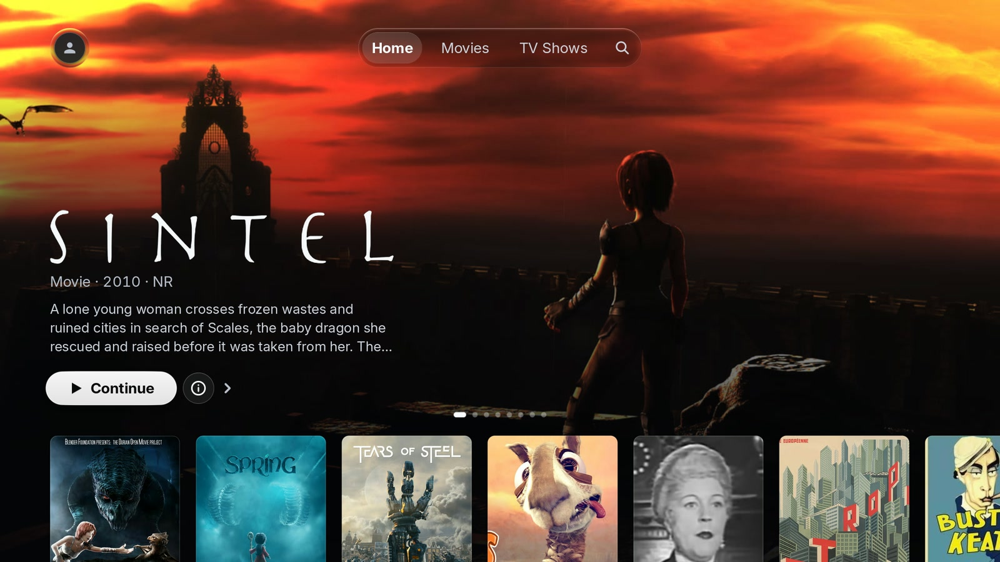
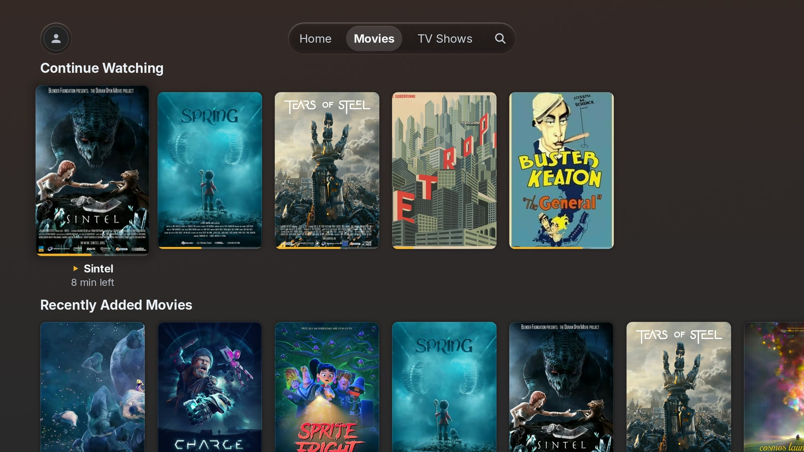

Homebrew Channel
AvailableFind PlxNative in the Homebrew Channel and install it directly.
Open Homebrew Channel →PlxNative is an independent client for Plex Media Server, built to make browsing feel fast, smooth, and enjoyable again on LG webOS TVs — even older ones.

My TV still had a great panel. But using the official Plex app on it had become frustratingly slow.
The TV itself was still perfectly good — replacing it, or adding another box just to get a responsive interface, felt like the wrong solution. So I built the client I wanted to use myself.
Responsiveness is hard to describe. It is easier to show.
Performance was the reason PlxNative started. It was never the whole goal.

Built differently. PlxNative is written in Rust and renders its interface directly with OpenGL instead of running the UI inside a browser engine. Playback is handed to the television's native media stack.
Rust · OpenGL · Native webOS · Open source
“It looks better and more modern than the official Plex app. And the performance, even on my old 2018 OLED55C8.”
LG OLED55C8 · GitHub #73 ↗
PlxNative can be installed without rooting your television.
Find PlxNative in the Homebrew Channel and install it directly.
Open Homebrew Channel →Install PlxNative on a normal, unrooted LG TV using Developer Mode.
Developer Mode sessions expire periodically and need to be renewed.
Installation guide →I'm exploring an official LG Content Store release. Availability and timing aren't confirmed.
Built for webOS 4.0 and newer. Compatibility can vary by TV model.
Requires a Plex account and Plex Media Server.
PlxNative uses the codecs available on your television and falls back to Plex transcoding when needed.
Crash reporting and usage analytics are optional and disabled by default.